Пара садится рядом с одним телефоном и за пятнадцать минут проходит разговор по заранее выбранным темам. Ниже — весь путь от главного экрана до итога, снятый на Redmi Note 10 Pro, и пояснение, что за каждым экраном стоит.
Три экрана до того, как пара начнёт говорить друг с другом.
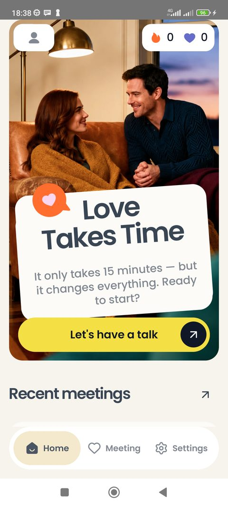
Баннер «Love Takes Time» не меняется — так его нарисовал дизайнер. Жёлтая кнопка Let's have a talk — единственное действие, которого от пары ждут.
Ниже — Recent meetings: последние встречи. Пока их нет, на месте списка стоит картинка пустого состояния. Внизу три вкладки: Home, Meeting, Settings.
Под капотом: список читается из базы на самом телефоне. Интернета для этого экрана не нужно.
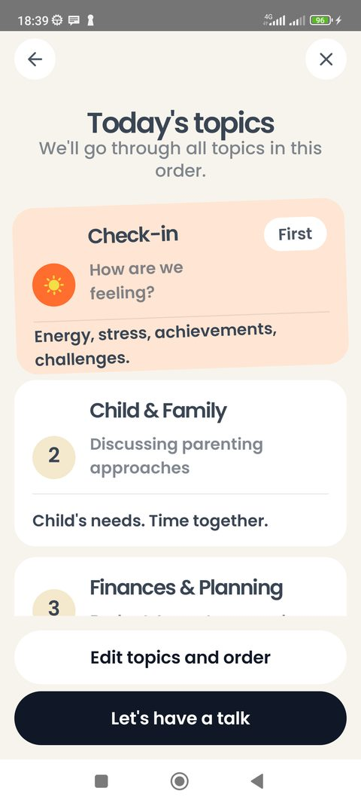
Пара видит темы в том порядке, в котором их пройдёт. Порядок и состав она выбрала раньше и меняет через Edit topics and order — вдвоём, перед встречей.
Check-in стоит первым с меткой First, Wrap-up — последним с меткой Last, и убрать их нельзя: это начало и подведение итогов.
Под капотом: выбор тем и их порядок хранятся локально и переносятся в следующую встречу.
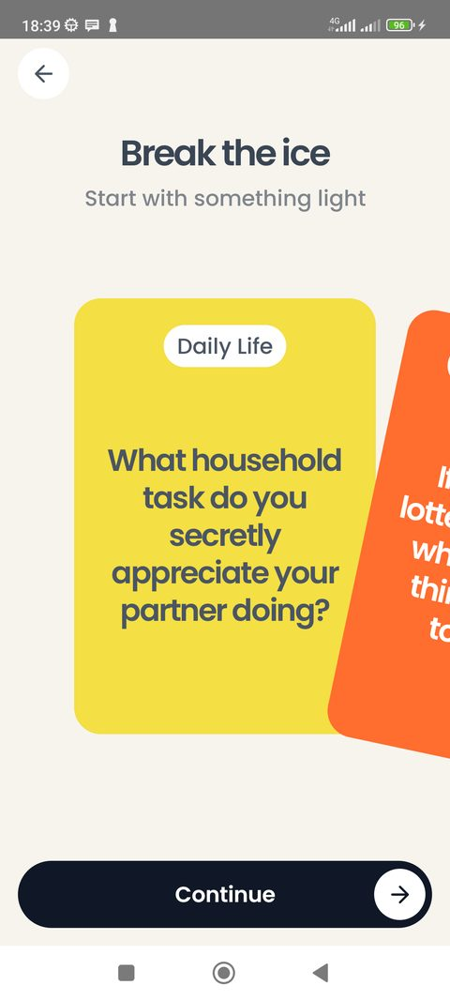
Лёгкий вопрос, чтобы начать не с дел: карточки перелистываются, та, что осталась в середине, и есть вопрос дня. Он же попадёт в итог встречи.
Под капотом: вопросы лежат в приложении списком — их четыре, столько нарисовано в макете. Ничего не подгружается и не сочиняется. Для еженедельного ритуала четырёх мало, и пополнять список должен заказчик: тон этих вопросов и есть тон продукта.
Приложение стоит только у одного партнёра, поэтому карточки идут по очереди на одном экране.
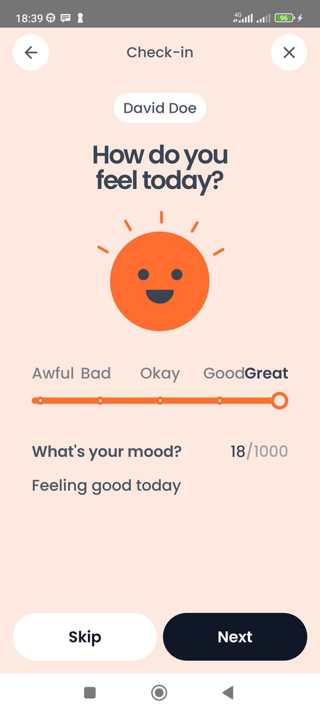
Пять лиц от Awful до Great. Выбранное настроение перекрашивает весь экран — это самая заметная анимация в приложении.
Ниже — поле «What's your mood?» со счётчиком символов. Текст диктуют голосом системной клавиатурой, если печатать лень.
Под капотом: счётчик считает до 1000 и дальше не пускает; распознавания речи в приложении нет — это диктовка Android. Продиктованная фраза приходит в поле целым куском, поэтому поле её обрезает по лимиту, а не отклоняет целиком.
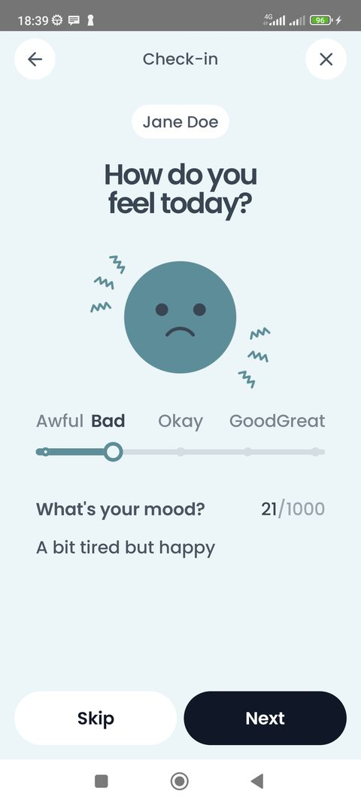
Тот же экран, но имя сверху другое. Телефон передают из рук в руки — второй партнёр отвечает сам.
Под капотом: имена пары берутся из настроек; пока их не ввели, приложение честно пишет Partner 1 и Partner 2.
Каждая выбранная тема — один шаг, и счётчик наверху показывает, сколько осталось.
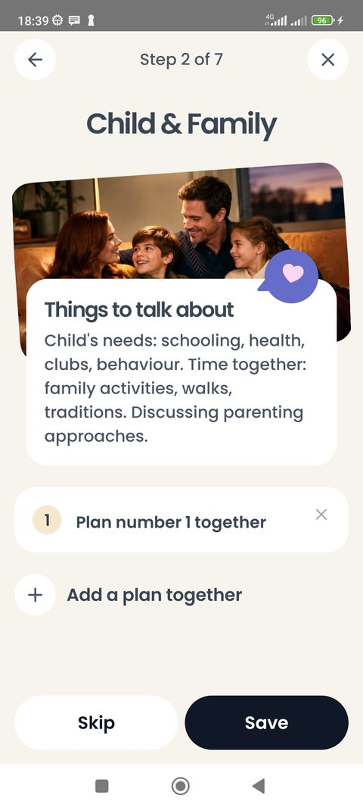
Фотография, подсказка Things to talk about — о чём поговорить, — и кнопка Add a plan together. План пара формулирует сама: «что мы с этим сделаем».
Save сохраняет тему с планами, Skip уводит дальше без записи.
Под капотом: шаблон экрана один на все четырнадцать тем — меняются фото, иконка, заголовок и подсказка. Планов на тему может быть несколько, каждый со своим текстом; всё пишется в локальную базу сразу, не в конце встречи.
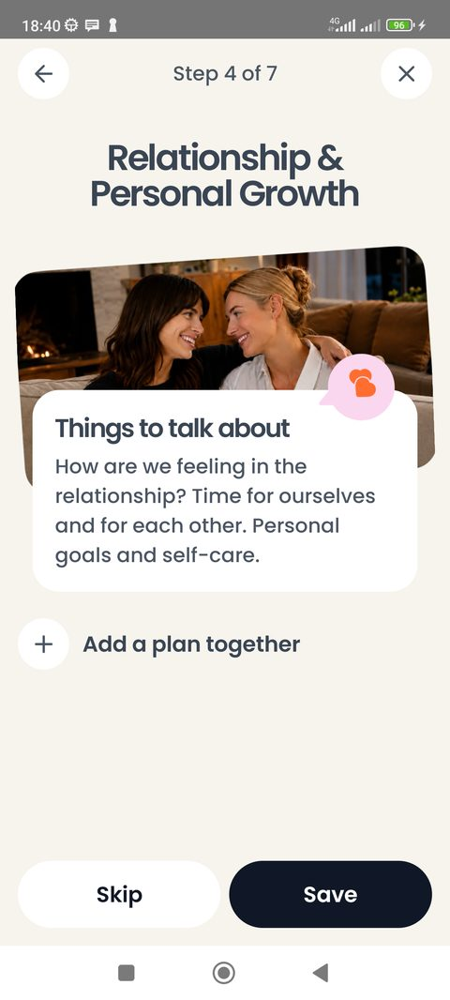
Если тему решили не обсуждать, её пропускают. В итог встречи она не попадёт, и в отчёте будет видно, что разобрали четыре темы из пяти.
Под капотом: пропуск — это отдельное состояние темы, а не пустой текст: в архиве видно разницу между «пропустили» и «обсудили, но ничего не записали».
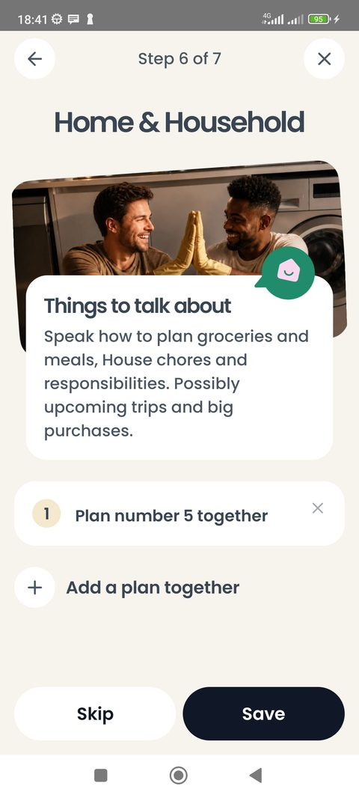
Ничего нового — просто конец списка. Дальше приложение само уводит на подведение итогов.
Под капотом: если встречу прервать на любом шаге, она сохраняется черновиком и в следующий раз продолжится ровно отсюда, без вопросов и модальных окон.
Два экрана благодарности и один отчёт, который можно отправить себе на почту.
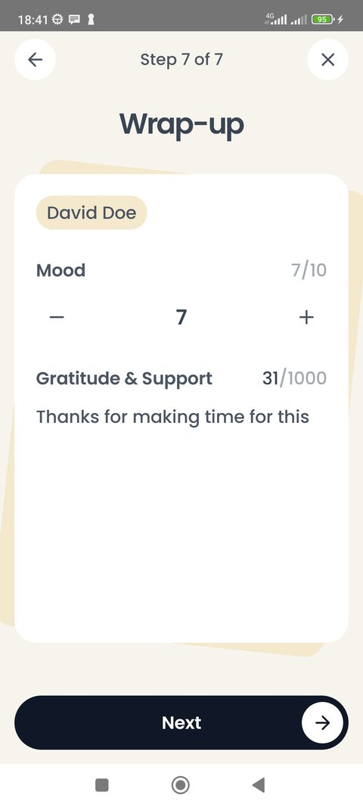
Настроение после разговора ставят цифрой от 1 до 10 кнопками «−» и «+», а ниже пишут, за что хочется сказать спасибо сегодня.
Под капотом: это та же карточка, что и в check-in, но с другим вопросом — сравнение «до» и «после» и есть смысл шкалы. Что в check-in пять лиц, а здесь десятибалльная шкала — расхождение самого макета, записанное вопросом дизайнеру.
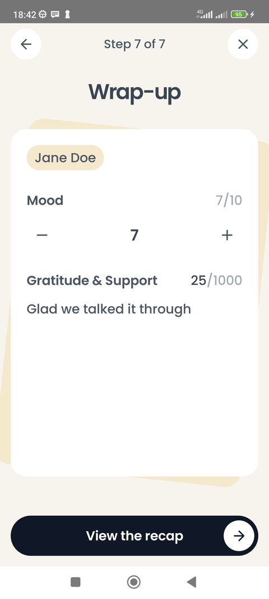
Телефон снова передают. После этого экрана встреча считается завершённой.
Под капотом: момент завершения — это когда встреча перестаёт быть черновиком и попадает в архив.
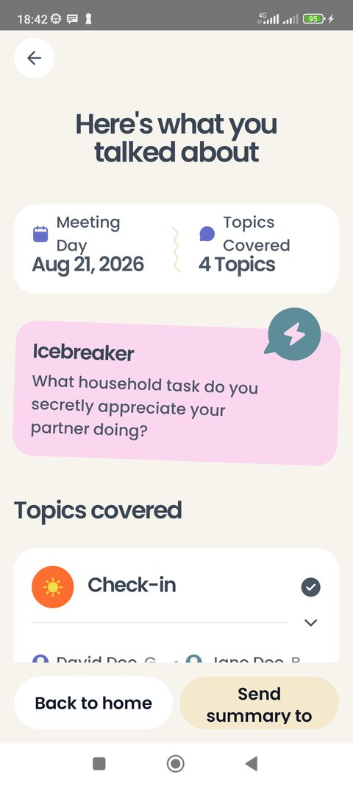
Дата встречи, сколько тем разобрали, вопрос-разогрев с ответом и дальше — список тем.
Под капотом: отчёт собирается из того, что пара сама наговорила и записала. Ничего не пересказывается и не обобщается машиной.
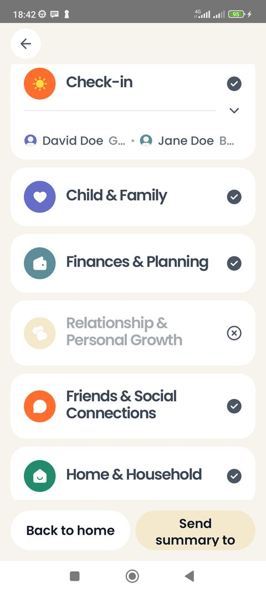
Темы раскрываются по нажатию — внутри настроение обоих и записанные планы. Внизу два действия: Back to home и Send summary to….
Под капотом: письмо уходит через серверную функцию Supabase — это единственное место, где приложению нужен интернет, кроме входа. Не ушло — попробует ещё раз позже. Кнопки внизу в макете обрезаны краем кадра, подписана только правая; левая взята из разбора функционала, вопрос дизайнеру записан.
Того же сценария, но в стороне от прохода: пустые состояния, редактирование тем и раскрытый итог.
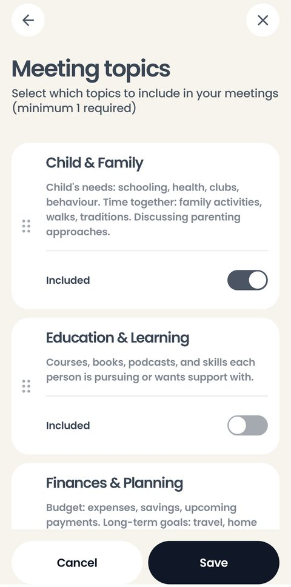
Куда ведёт Edit topics and order с экрана тем: четырнадцать тем с описаниями и тумблерами Included, минимум одна включённая. Темы переставляются пальцем за ручку слева.
Этот же экран открывается из настроек как Topics management — он один.
Под капотом: встреча фиксирует свои темы при старте, поэтому правка списка не переписывает прошедшие встречи. Заказчик назвал смену тем прямо перед встречей «странным юскейсом» — по замыслу набор стабилен неделями, а меняют его в настройках.
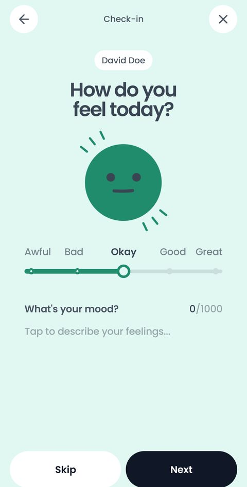
Так экран выглядит до того, как партнёр тронул шкалу: настроение стоит посередине, на Okay, поле пустое, счётчик показывает 0/1000.
Под капотом: когда клавиатура занимает пол-экрана, check-in убирает лицо и вопрос, оставляя шкалу и поле, — ровно так, как это нарисовано в макете. Счётчик краснеет у предела, а длинный текст прокручивается внутри поля и не двигает кнопки.
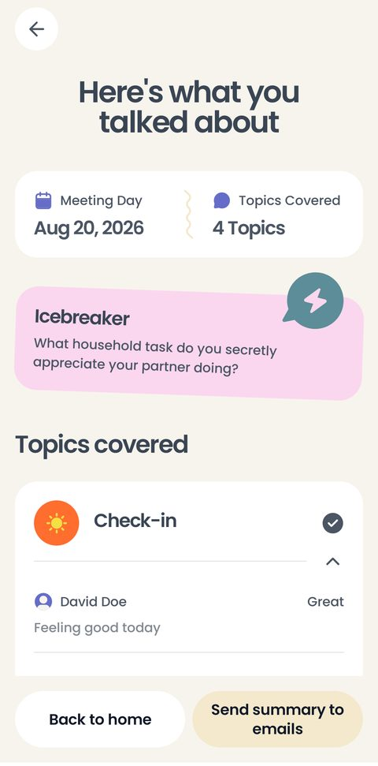
Карточки Check-in и Wrap-up складываются в одну строку и раскрываются нажатием: внутри настроение каждого партнёра и его текст целиком. Ниже — Key notes, все записанные планы одним нумерованным списком.
Под капотом: экран длиной 2686 dp в макете — это один длинный скролл, а не несколько экранов. Отметок «выполнено» у планов нет намеренно: это список для перечитывания, а не то-до-лист.
«Career & Professional Development» переносится на две строки и сдвигает всё под собой. Проверяется отдельно — topic_long_title и topic_longest_title.
Сохраняется черновиком и подхватывается молча, с того же шага. Экрана «продолжить или начать заново» в макете нет, и мы его не рисуем.
Когда приложение сворачивают, запись не откладывается на потом: система даёт момент дописать встречу в базу.
Нативной клавиатурой Android. Диктуют не весь разговор, а сформулированные пункты — постоянной записи разговора в продукте нет.